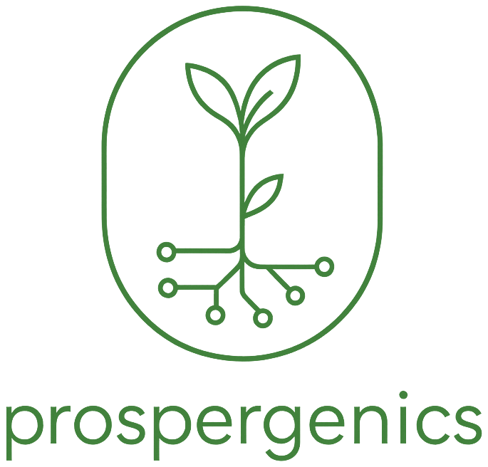

Karibu Mara
Give local businesses access to customers and visitors.
Platform · live

About ProsperGenics
ProsperGenics is a community of people who want to create value — for themselves, for others, and for the communities around them.
But behind that simple idea is a much bigger question:
What makes one idea turn into an opportunity, one skill into an income, one connection into a collaboration, or one project into something that improves people’s lives?
We don’t pretend to have the final answer.
We are trying to find out.
How is value actually created?
You could say we are searching for the genetics of prosperity: the principles, conditions and combinations that allow people to create more value with what they already have.
ProsperGenics is not only a research project. Our laboratory is the real world.
We build businesses and technology. We work with entrepreneurs and communities. We teach and learn new skills. We connect people who can help each other. We experiment with AI and new ways of working. And we work on real projects with real customers, opportunities and consequences.
Some of those experiments succeed. Others don’t.
Both teach us something.
We try to capture those lessons, turn them into shared knowledge, and use what we learn to make the next project better.
That creates a continuous cycle:
For us, creating value is not simply about making more money.
Money can be one form of value. So can knowledge, skills, time, independence, opportunity, stronger communities, useful technology or helping somebody else accomplish something they could not accomplish before.
That is why empowerment is central to ProsperGenics.
We want people to become more capable, not more dependent on us.
Technology — including AI and the systems we build around Jengo — can dramatically increase what a person or small team is able to accomplish. But technology is a tool, not the purpose.
The purpose is what people become capable of doing with it.
ProsperGenics grew from collaboration between people in Kenya and the Netherlands, bringing together very different experiences, skills, cultures and opportunities.
That diversity matters.
If we want to understand value creation, we cannot study it from only one perspective.
What creates value for a software company in the Netherlands may look very different from what creates value for an entrepreneur in Kenya, a young person learning a new skill, a local tourism business, or a community trying to create new economic opportunities.
By working together across those different contexts, we challenge our assumptions and learn from each other.
We don’t believe prosperity has to be a zero-sum game.
The most interesting forms of value creation are often those where several people become better off at the same time: someone learns, someone earns, a customer gets something useful, a business grows, knowledge is created and that knowledge helps the next person.
That is the kind of system we want to understand and build.
ProsperGenics is therefore not based on a finished formula.
It is a community searching for one.
And we believe the best way to understand how value is created is to keep creating it — together.
Our research runs inside real projects. These are some of the places where we practise it.
Give local businesses access to customers and visitors.
Find and understand the systems that expand what you can do.
Turn knowledge into useful, certified skills you can prove.
Connect capability with demand — experts available for work.
Multiply what a person or team can actually build.